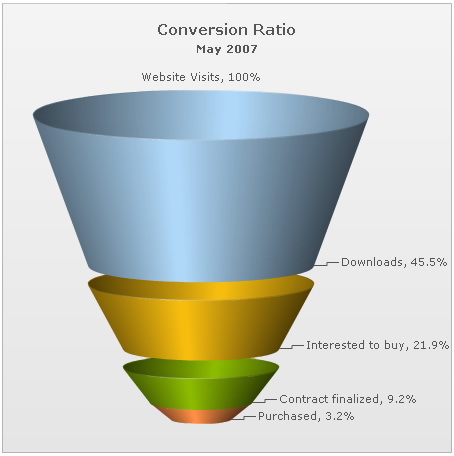
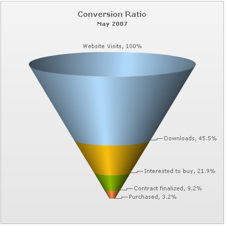

Funnel Chart > Creating a simple chart |
||||||||||||
Since funnel charts are mostly used to show streamlined data, here, we'll create a simple funnel chart to show the "Sales Conversion Ratio" of a product website for a particular month. The chart will display the various processes involved in sales and how many targeted customers were filtered out in each process. |
||||||||||||
| Data to show | ||||||||||||
| We'll be showing the following data on the chart: | ||||||||||||
|
||||||||||||
| Here, we've divided the entire sales process in five simple steps (though you can have any number of steps in your process). The process starts when a unique visitor visits the website and ends when he purchases the intended product. | ||||||||||||
| Converting into XML | ||||||||||||
| The above data needs to be converted into XML, for use by funnel chart. The converted XML would look as under: | ||||||||||||
| <chart caption='Conversion Ratio' subcaption='May 2007' showPercentValues='1' decimals='1' baseFontSize='11' > <set label="Website Visits" value="385634" /> <set label="Downloads" value="175631" /> <set label="Interested to buy" value="84564" /> <set label="Contract finalized" value="35654" /> <set label="Purchased" value="12342" /> <styles> <definition> <style type='font' name='captionFont' size='15' /> </definition> <application> <apply toObject='CAPTION' styles='captionFont' /> </application> </styles> </chart> |
||||||||||||
Here, we've:
When you now view the chart (after embedding it in HTML code) with above XML, you'll see it as under (we've clicked on a slice here to show the slicing effect): |
||||||||||||
|  | ||||||||||||
FusionWidgets has created the funnel segments based on your data provided. Also, it has converted the numbers into percentage, since we had set <chart showPercentValues='1' ..>. |
||||||||||||
| Same slant angle for each funnel | ||||||||||||
In the above example, each funnel slice has its width according to its data (top and bottom openings proportional to data in and out respectively, to get a visual cue of the funneling rate as compared to other funnels depicting funneling/screening rate of allied processes). However, if you do not want the width of each funnel to depend on its data, you can set: <chart useSameSlantAngle='1' ...> This will result in: |
||||||||||||
|  | ||||||||||||
| As you can see, each funnel now has the same slant angle. The variation in data can be visualized only from each funnel's height. |